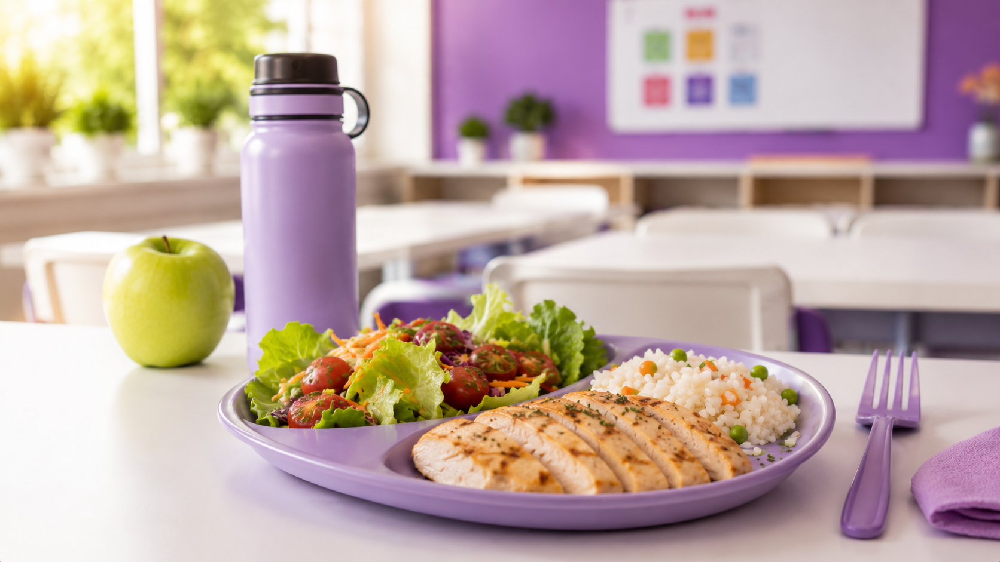
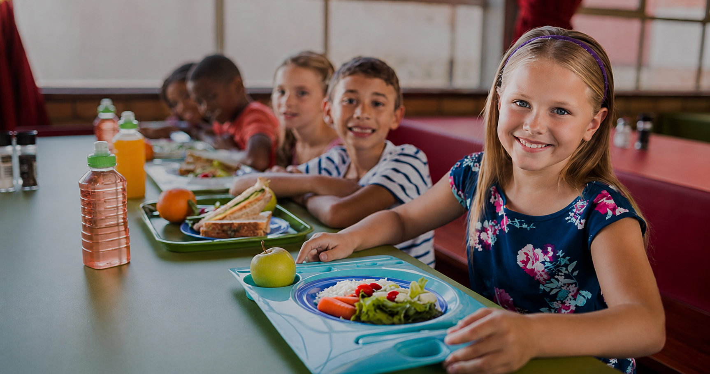
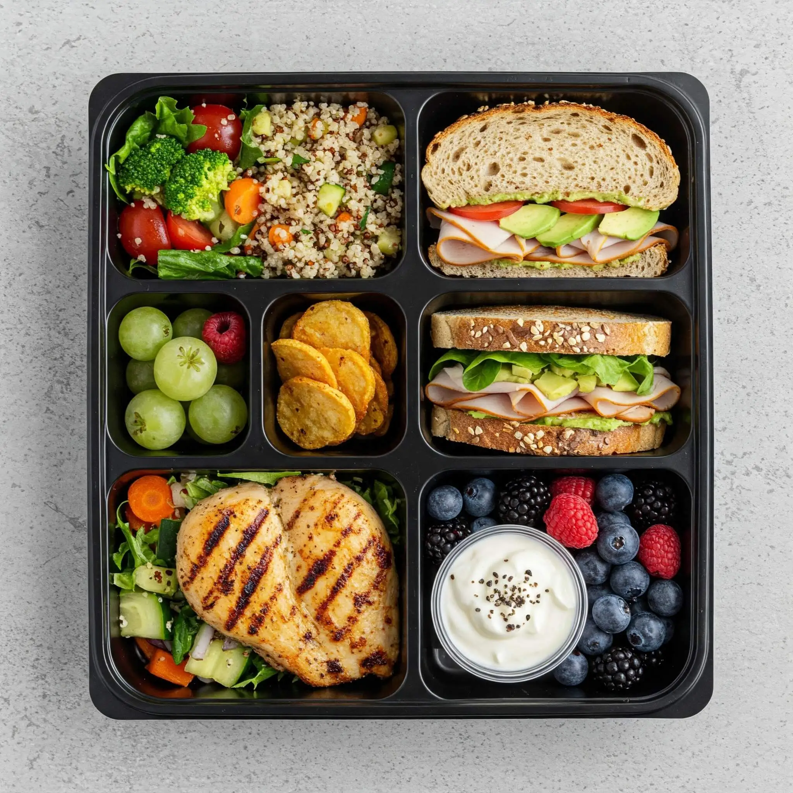
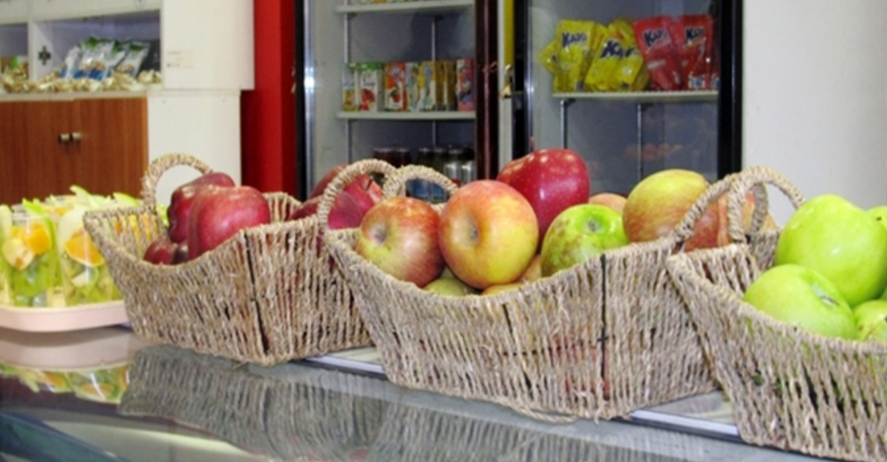
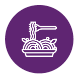

La buena alimentación es un pilar fundamental para el crecimiento
Brindamos servicios integrales de alimentación para instituciones educativas, ofreciendo calidad, nutrición y compromiso en cada comida.
Ver Servicios
¿Quiénes Somos?
Pilares Gastronómicos es una empresa con más de 20 años de experiencia en servicios de alimentación escolar y gastronómica institucional.
Nuestro compromiso es ofrecer comidas saludables, equilibradas y elaboradas bajo estrictos controles de calidad e higiene.

Nuestros Servicios

Menú Diario
Platos balanceados con opciones variadas, postre y bebidas para una alimentación completa.

Viandas
Conservación y calentamiento adecuado de alimentos para garantizar calidad y seguridad.

Kiosco Saludable
Opciones nutritivas para fomentar hábitos saludables desde la infancia.

Calidad
Procesos elaborados bajo controles estrictos.
Nutrición
Alimentación sana y equilibrada para estudiantes.
Compromiso
Atención personalizada y experiencia profesional.